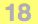

API_Neig
Describes a neig point of an element.
typedef struct {
API_NeigID neigID;
Int32 filler_1;
API_Guid guid;
Int32 inIndex;
Int32 flags;
API_NeigElemPartID elemPartType;
UInt32 elemPartIndex;
Int32 subType;
Int32 nodeType;
UInt32 supplUnId;
} API_Neig;
Members
- neigID
- Type of the element neig. It also defines the type of the element; you can convert the neigID to API_ElemTypeID with the APIAny_NeigIDToElemTypeID function.
- guid

- Guid of the element.
- inIndex
- Subindex inside the element.
- flags
-
Flags of the neig:
Value
Description
API_NeigFlg_NormalNormal neig.
API_NeigFlg_HoleSelThe neig is part of a hole.
API_NeigFlg_Extra3DThe neig appears only in 3D.
API_NeigFlg_GhostThe neig is for an element coming from the ghost story.
API_NeigFlg_SurfaceThe neig refers to a surface of an element (e.g. Morph face).
- elemPartType
- Type of the element part in case of partial selection (currently available with Morph only):
Value
Description
APINeigElemPart_NoneThe whole element is selected.
APINeigElemPart_EdgeAn edge of the element is selected.
APINeigElemPart_VertexA vertex of the element is selected.
APINeigElemPart_FaceA face of the element is selected.
APINeigElemPart_Subelem
A subelement is selected.
- elemPartIndex
- Index of the element part (edge, vertex, face) partially selected.
- subType

- .
- nodeType
- .
- supplUnId
- .
Remarks
This structure is used in requiring the current element selection (ACAPI_Selection_Get), selecting elements or element parts (ACAPI_Element_Select), and getting user input (APIIo_GetPointID, etc.).
Requirements
- Version: API 2.1 or later
- Header: APIdefs_Elements.h